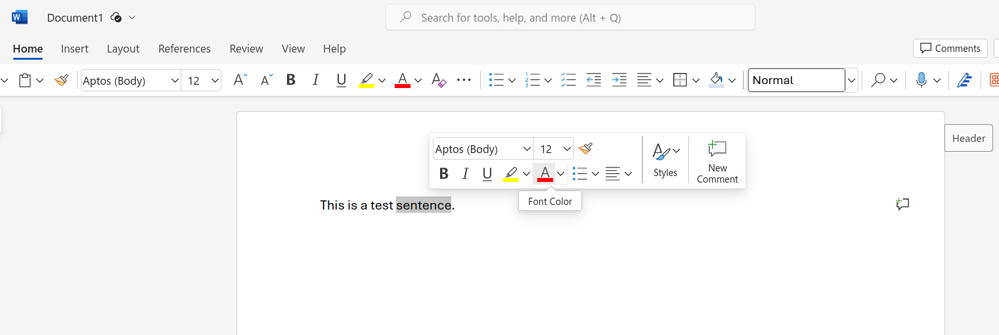
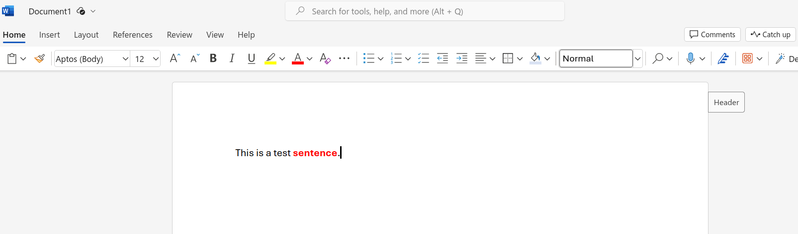
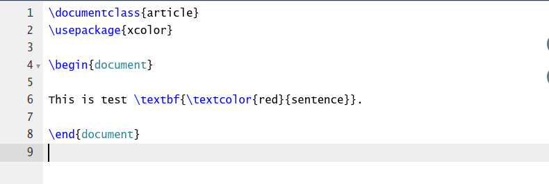
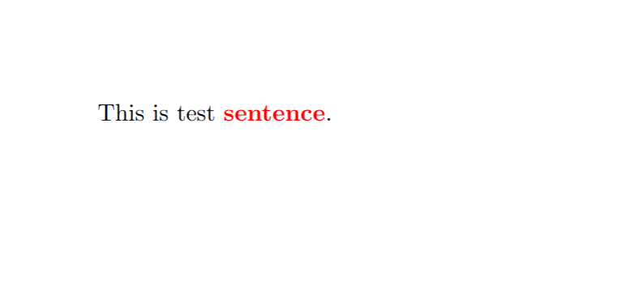
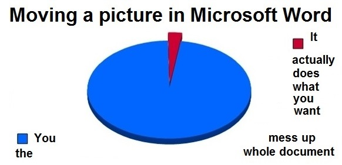
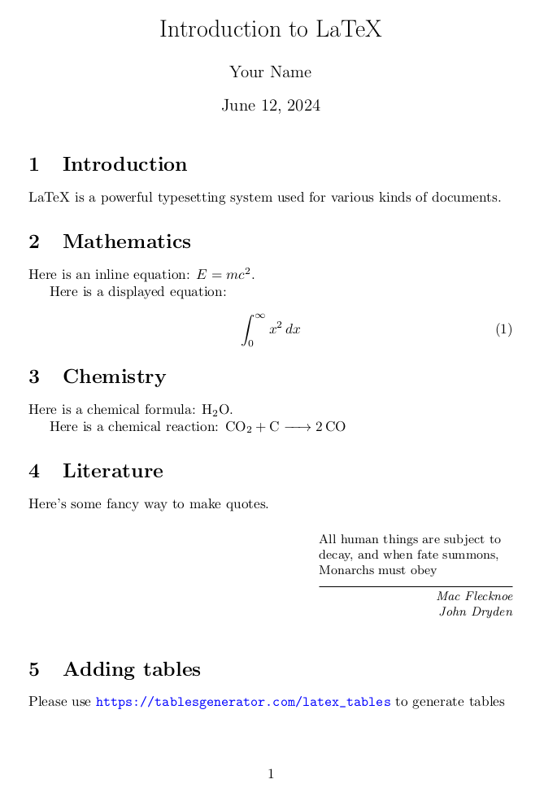
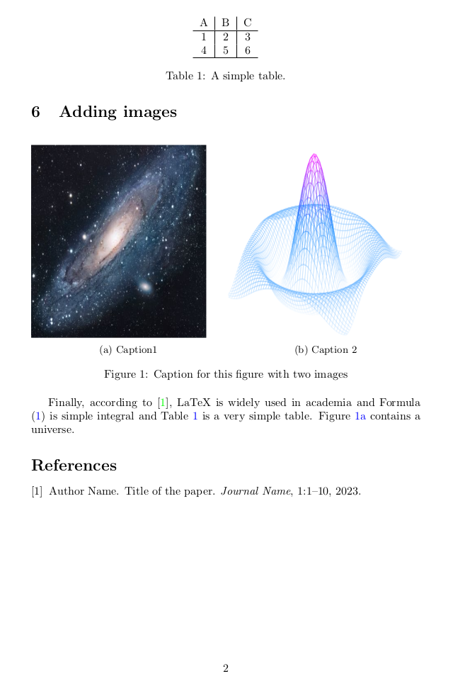

What is LaTeX?
LaTeX (more formally shown as $ $) is a document preparation system and markup language that is widely used for typesetting scientific, technical, and mathematical documents. It is based on the TeX typesetting system developed by Donald Knuth and is particularly suited for creating complex, structured documents such as theses, dissertations, research papers, and books. LaTeX allows users to focus on the content of their document, rather than its layout, by providing a set of markup commands that can be used to define the structure and formatting of the text. This results in professional-quality output with precise control over typography, spacing, and layout, making it a popular choice among academics, researchers, and publishers.
Word vs Latex
Microsoft Word is a WYSIWYG editor (what you see is what you get). If you want to make text bold and red, you select the text and then click on “Bold” icon and then select red color from “Font Color” menu. Finally, you see the results on your screen. Or, if you want to add an image to your text you can drag and drop the image to your document. And then you can move around the image on the page.


This is very practical and efficient for small documents but becomes an disadvantage for documents like thesis, books, research papers, etc.
LaTeX has very different approach. You describe how the content should look or placed and then LaTeX will compile the document accordingly. You write your Latex code first:

Then you compile it, after which you get a PDF output:

Word-vs-Latex memes
Latex might be complex for small and simple documents but for longer and more professional documents, Latex is much simpler.

In Word, when you add a picture, layout of your whole document might mess up.

Basics of Latex
Rest of the content is taken from Learn LaTeX in 30 minutes at Overleaf
The preamble of a document
The preamble part of a latex Document contains the following information:
- Document type (article, report, book, etc.)
- Packages to use/include
- Information to be used in the document (title, author name, date, etc.)
- Macros
Here’s sample document which contains simple preamble part.
\documentclass[12pt, letterpaper]{article}
\title{My first LaTeX document}
\author{Hubert Farnsworth\thanks{Funded by the Overleaf team.}}
\date{August 2022}
\begin{document}
\maketitle
We have now added a title, author and date to our first \LaTeX{} document!
\end{document}This document is rendered as follows (Open this document in Overleaf):

Adding comments
LaTeX is a form of “program code”, so you can include comments within your document. A LaTeX comment is a section of text that will not be typeset or affect the document in any way—often used to add “to do” notes; include explanatory notes; provide in-line explanations of tricky macros or comment-out lines/sections of LaTeX code when debugging.
To make a comment in LaTeX, simply write a % symbol at the beginning of the line, as shown in the following code which uses the example above:
\documentclass[12pt, letterpaper]{article}
\title{My first LaTeX document}
\author{Hubert Farnsworth\thanks{Funded by the Overleaf team.}}
\date{August 2022}
\begin{document}
\maketitle
We have now added a title, author and date to our first \LaTeX{} document!
% This line here is a comment. It will not be typeset in the document.
\end{document}Bold, italics and underlining
Next, we will now look at some text formatting commands:
- Bold: bold text in LaTeX is typeset using the command.
- Italics: italicised text is produced using the command.
- Underline : to underline text use the command.
The next example demonstrates these commands:
Some of the \textbf{greatest}
discoveries in \underline{science}
were made by \textbf{\textit{accident}}.This Latex will be rendered as:
Some of the \(\textbf{greatest}\) discoveries in \(\underline{science}\) were made by \(\textbf{\textit{accident}}\)
Another very useful command is
\emph{argument}, whose effect on its argument depends on the context. Inside normal text, the emphasized text is italicized, but this behaviour is reversed if used inside an italicized text
Adding images
In Overleaf editor, there are multiple ways to include an image:
- Use the Insert Figure button, located on the editor toolbar, to insert an image into Visual Editor or Code Editor
- Copy and paste an image into Visual Editor or Code Editor.
- Use Code Editor to write LaTeX code that inserts a graphic.
Options 1 and 2 automatically generate the LaTeX code required to insert images, in Option 3, the image needs to be uploaded to Overleaf project.
Below is an example:
\documentclass{article}
\usepackage{graphicx} %LaTeX package to import graphics
\graphicspath{{images/}} %configuring the graphicx package
\begin{document}
The universe is immense and it seems to be homogeneous,
on a large scale, everywhere we look.
% The \includegraphcs command is
% provided (implemented) by the
% graphicx package
\includegraphics{universe}
There's a picture of a galaxy above.
\end{document}Which renders as follows (Open this example in Overleaf)

Figure captions, labels and references
Images can be captioned, labelled and referenced by means of the figure environment, as shown below:
\documentclass{article}
\usepackage{graphicx}
\graphicspath{{images/}}
\begin{document}
\begin{figure}[h]
\centering
\includegraphics[width=0.75\textwidth]{mesh}
\caption{A nice plot.}
\label{fig:mesh1}
\end{figure}
As you can see in figure \ref{fig:mesh1}, the function grows near the origin. This example is on page \pageref{fig:mesh1}.
\end{document}Which renders as:

Here are the explanations of each command:
\includegraphics[width=0.75\textwidth]{mesh}: This form of \includegraphics instructs LaTeX to set the figure’s width to 75% of the text width—whose value is stored in the command.\caption{A nice plot.}: As its name suggests, this command sets the figure caption which can be placed above or below the figure. If you create a list of figures this caption will be used in that list.\label{fig:mesh1}: To reference this image within your document you give it a label using the command. The label is used to generate a number for the image and, combined with the next command, will allow you to reference it.\ref{fig:mesh1}: This code will be substituted by the number corresponding to the referenced figure.
Lists in Latex
You can use \begin{environment-name} and \end{environment-name} environments to list unordered/bullet lists (itemize) or ordered lists (enumerate)
Unordered lists
\documentclass{article}
\begin{document}
\begin{itemize}
\item The individual entries are indicated with a black dot, a so-called bullet.
\item The text in the entries may be of any length.
\end{itemize}
\end{document}Ordered lists
\begin{enumerate}
\item This is the first entry in our list.
\item The list numbers increase with each entry we add.
\end{enumerate}The lists above will render as:

OR

Adding math
One of the main advantages of LaTeX is the ease with which mathematical expressions can be written. LaTeX provides two writing modes for typesetting mathematics:
- inline math mode used for writing formulas that are part of a paragraph
- display math mode used to write expressions that are not part of a text or paragraph and are typeset on separate lines
Inline math mode
\documentclass[12pt, letterpaper]{article}
\begin{document}
In physics, the mass-energy equivalence is stated
by the equation $E=mc^2$, discovered in 1905 by Albert Einstein.
\end{document}Will render as:
In physics, the mass-energy equivalence is stated by the equation \(E=mc^2\), discovered in 1905 by Albert Einstein.
Display math mode
\begin{equation}
E=mc^2
\end{equation}Will render as formulas in separate lines:
\[\begin{equation} E=mc^2 \end{equation}\]
Please refer to more complete examples for more detail.
Basic document structure
Especially scientific documents have sections like Abstract and then rest of the document might be divided up into sections/chapters. It’s trivial to define those structures in Latex
Abstracts
The Latex code below:
\documentclass{article}
\begin{document}
\begin{abstract}
This is a simple paragraph at the beginning of the
document. A brief introduction about the main subject.
\end{abstract}
\end{document}Will render as:

Paragraphs and new lines
In Latex “an empty line” means new paragraph, whereas in Word just pressing Enter will start a new paragraph
If you need to break a line you can use \\ or \newline command. Please check Paragraphs and new lines section at Overleaf for more details.
Chapters and sections
You can use the following commands to define structure. The Latex will figure out numbering, font-size and margin for each structure
\part{part}\chapter{chapter}\section{section}\subsection{subsection}\subsubsection{subsubsection}
Creating tables
In Latex, creating tables might be more tedious compared to Word. First we need to define and describe tabular environment and also we need to define the columns with &.
The following latex code
\begin{center}
\begin{tabular}{c c c}
cell1 & cell2 & cell3 \\
cell4 & cell5 & cell6 \\
cell7 & cell8 & cell9
\end{tabular}
\end{center}Will render as:

You don’t need to prepare the tables manually, please use online TablesGenerator where you can copy and paste Excel tables and generate Latex code
Please refer to adding borders and captions, labels and references sections at Overleaf
Adding table of contents
If you add \tableofcontents command in your document, you’ll automatically add table of contents with section titles and page numbers.
Here’s an example:

Overview
Here’s a sample Latex code which showcases several features (Open in Overleaf)
\documentclass{article}
\usepackage{amsmath} % For math symbols
\usepackage{mhchem} % For chemistry symbols
\usepackage{graphicx} % For including images
\usepackage{epigraph}
\usepackage{subcaption}
\usepackage{hyperref}
\hypersetup{colorlinks=true,
linkcolor=blue,
urlcolor=blue}
\title{Introduction to LaTeX}
\author{Your Name}
\date{\today}
\begin{document}
\maketitle
\section{Introduction}
LaTeX is a powerful typesetting system used for various kinds of documents.
\section{Mathematics}
Here is an inline equation: $ E = mc^2 $.
Here is a displayed equation:
\begin{equation}
\int_{0}^{\infty} x^2 \, dx\label{eq:integral}
\end{equation}
\section{Chemistry}
Here is a chemical formula: \ce{H2O}.
Here is a chemical reaction: \ce{CO2 + C -> 2 CO}
\section{Literature}
Here's some fancy way to make quotes.
\epigraph{All human things are subject to decay, and when fate summons, Monarchs must obey}{\textit{Mac Flecknoe \\ John Dryden}}
\section{Adding tables}
Please use \url{https://tablesgenerator.com/latex_tables} to generate tables
\begin{table}[ht]
\centering
\begin{tabular}{c|c|c}
A & B & C \\
\hline
1 & 2 & 3 \\
4 & 5 & 6 \\
\hline
\end{tabular}
\caption{A simple table.}
\label{tab:simple}
\end{table}
\section{Adding images}
\begin{figure}[ht]
\begin{subfigure}{0.5\textwidth}
\includegraphics[width=0.9\linewidth, height=6cm]{universe}
\caption{Caption1}
\label{fig:subim1}
\end{subfigure}
\begin{subfigure}{0.5\textwidth}
\includegraphics[width=0.9\linewidth, height=6cm]{mesh}
\caption{Caption 2}
\label{fig:subim2}
\end{subfigure}
\caption{Caption for this figure with two images}
\label{fig:image2}
\end{figure}
Finally, according to \cite{sample}, LaTeX is widely used in academia and Formula \eqref{eq:integral} is simple integral and Table \ref{tab:simple} is a very simple table. Figure \ref{fig:subim1} contains a universe.
\bibliographystyle{plain}
\bibliography{sample}
\end{document}
This code is rendered as PDF as follows:

